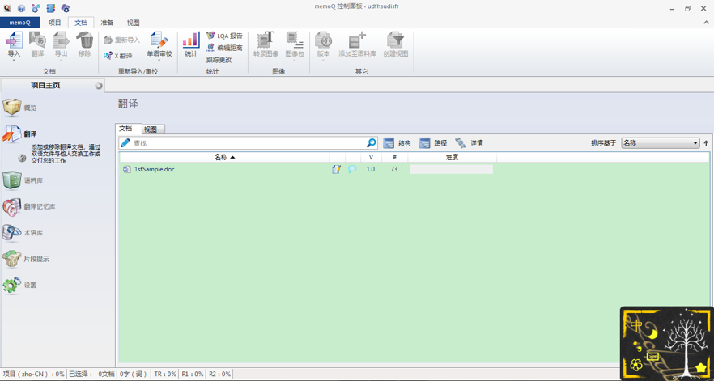
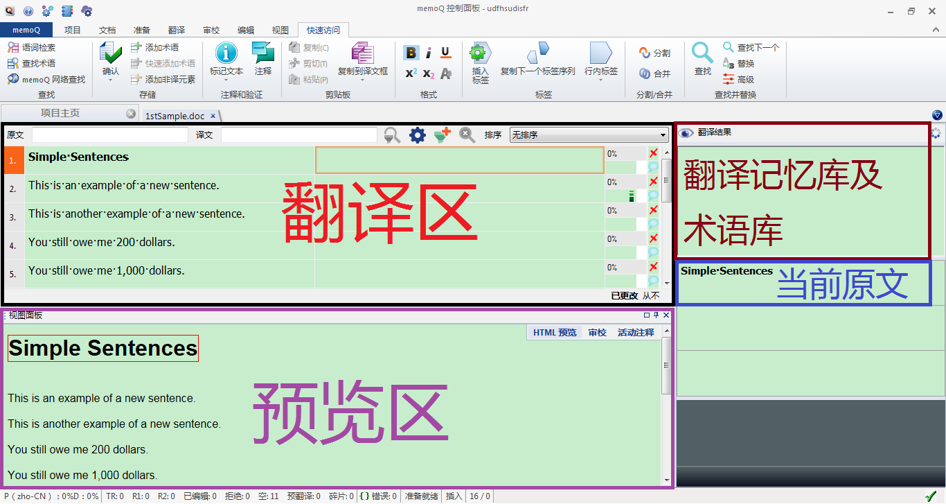
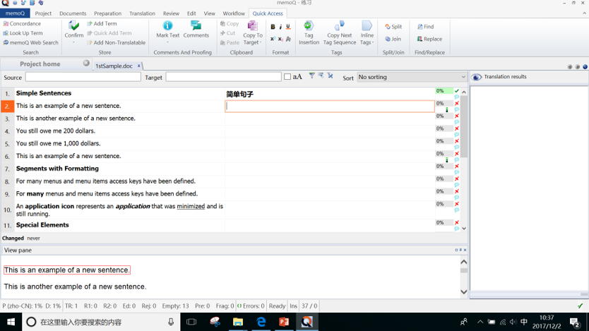
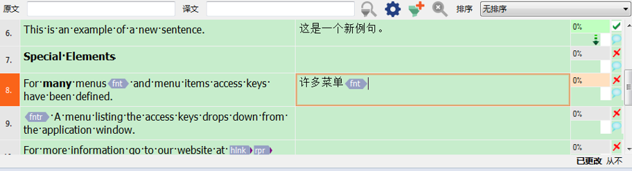
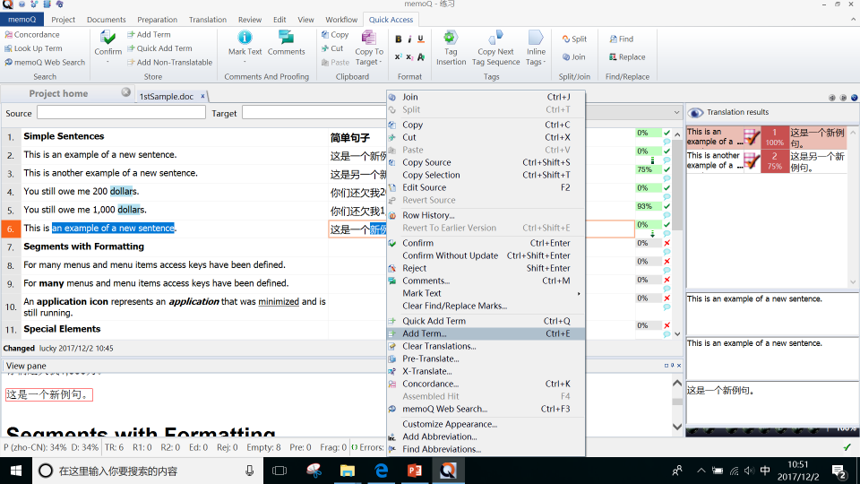
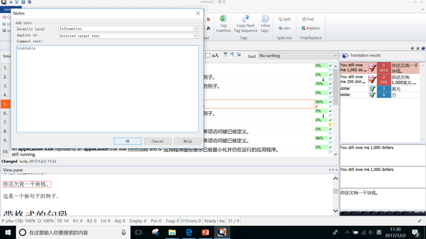

当我们面对洋洋洒洒几千字的文章，或者一些自己似曾相识的文章时，是否想过：如果能有人帮我先处理一下就好了。现在memo Q就可以充当我们的这种助手。在开始翻译前，译者可以使用既有记忆库对待译文本进行“预翻译”，并在随后进行“译后编辑”；在翻译过程中，记忆库也会随时保存新译文，并在下文出现相似或相同内容时自动输出最佳匹配译文供译者参考。
通过 MemoQ Server，可以实现多人共同进行翻译。同时可以共享记忆库和术语库，并且在翻译时即时保存修改的翻译到服务器上，多人可以互相查看。 同时还可以通过在线沟通工具进行信息交流。MemoQ 界面友好、操作简便，它将翻译编辑功能、翻译记忆库、术语库等集成在一个系统中，具有长字符串相关搜索等功能，还可兼容 SDL Trados、STAR Transit 及其他 XLIFF 提供的翻译文件。
如下图所示，在memoQ的Project home界面中，双击该项目的单个条目，即可弹出翻译界面。


如下图所示的翻译界面中，在相应位置输入译文，并按Ctrl+Enter 组合键进行确认。确认后，译文输入框右旁的红色叉号变为绿色对勾。

特殊格式：在译文相应位置按f9即可插入

添加术语：先将原文、译文中对应的词语用鼠标左键选定，之后按下 Ctrl +E组合键即可添加术语。然后填写术语的信息框。

添加批注：选中你想添加的文本，然后点击右边的气泡添加即可
